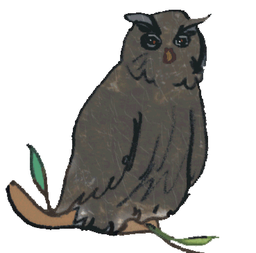

Automated Reasoning around the world and more

Conferences and Associations
Journals:

Electronic Series:
Selected provers, libraries, places, miscellaneous resources:

Selected publishers:
Databases, repositories and related tools:

Funding agencies:
Sites for job searches:
Sites of general interest for research, teaching, computing:
- In the European Union:
- In the USA:

Sites of general interest for environmental and gender issues (yes, they are related):

Premier principe: ne se laisser abattre ni par les êtres, ni par les événements (Maria Sklodowska, 1888)
Maria Paola Bonacina